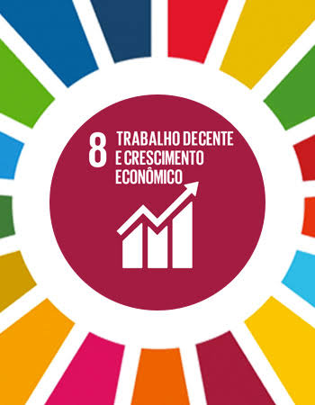

.png)
Trabalho Decente e Crescimento Econômico
Promover empregos dignos, igualdade de oportunidades e crescimento econômico sustentável para todos.
Conheça o objetivo
Qual é o objetivo do ODS 8?
O principal objetivo do ODS 8 é incentivar o crescimento econômico sustentável, promover oportunidades de emprego para todos e garantir condições dignas e justas de trabalho. Ele busca oferecer salários adequados, combater o trabalho infantil e a exploração dos trabalhadores, reduzir o desemprego e valorizar os profissionais. Além disso, pretende estimular o empreendedorismo e proporcionar oportunidades de crescimento profissional, contribuindo para uma sociedade mais justa, com igualdade, respeito e qualidade de vida para todos.

Conheça algumas metas
A ODS 8 busca promover o crescimento econômico, gerar oportunidades de emprego e garantir trabalho digno para todos. Abaixo, você encontrará algumas das principais metas estabelecidas pela ONU para alcançar esse objetivo.
Crescimento econômico sustentável
Inovação e aumento da produtividade
Apoio às empresas e novos empregos
Uso consciente dos recursos naturais
Salários justos e trabalho digno
Oportunidades para os jovens
Combate ao trabalho infantil e forçado
Proteção dos direitos dos trabalhadores
Turismo sustentável
Acesso aos serviços financeiros
Apoio ao comércio dos países em desenvolvimento
Mais oportunidades de emprego para jovens
Por que o ODS 8 é importante?
O ODS 8 busca garantir que todas as pessoas tenham oportunidades de trabalho com condições adequadas, respeito aos seus direitos e remuneração justa. Também incentiva o desenvolvimento das empresas, a criação de novos empregos e o fortalecimento da economia. Além disso, procura combater o trabalho infantil, a exploração dos trabalhadores, o desemprego e a desigualdade no mercado de trabalho. Outro objetivo é valorizar os profissionais, incentivar a capacitação e oferecer oportunidades para que jovens e adultos possam desenvolver suas habilidades. Dessa forma, contribui para uma sociedade mais desenvolvida, com melhores condições de vida e oportunidades para todos.

Trabalho digno é direito de todos!
O trabalho digno deve ser garantido a todas as pessoas, independentemente de sua idade, gênero ou condição social. Todos merecem oportunidades, respeito, segurança e uma remuneração justa. Valorizar os trabalhadores é contribuir para uma sociedade com menos desigualdade, mais inclusão e melhores condições de vida. Juntos podemos construir um futuro com mais oportunidades, respeito e igualdade.

Quer saber mais sobre o ODS 8?
Assista ao vídeo e descubra como podemos construir um futuro com mais empregos, oportunidades e igualdade!
Saiba maisDESAFIO ODS 8
Será que você realmente entende a importância do trabalho decente e do crescimento econômico? Leia as situações, analise os argumentos e escolha a alternativa mais adequada!